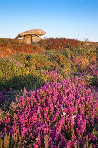

Explore In Cornwall
- Explore in Cornwall (01736 740234)
www.exploreincornwall.co.uk
Discover Cornwall’s extraordinary wildlife and explore the hidden corners, dramatic, spectacular cliffs, wide open moors and secret places walking with one of Cornwall’s leading naturalists.
Guided walking with Explore in Cornwall will get you away from the crowds and well-worn tourist trails. You will be able to experience the iconic wildlife, ancient landscapes and hidden wonders you won’t find in the usual guide books whilst in the company of one of Cornwall’s leading wildlife experts.
With over 300 miles of the National Trail, the South West Coast Path, Cornwall has the longest coastal path in Britain. Walking and hiking the coast path as well as the many inland paths, tracks and trails is the best way to explore and discover the amazing wildlife and inspiring environments that are found here in the south west of England.
With Explore in Cornwall you can:
- Spend time discovering the prolific wildlife and heritage of Cornwall, guided by a leading naturalist and qualified Mountain Leader.
- Walk breathtaking cliff top coastal paths, discover secret coves, trek into secluded valleys and explore the wild moors that make up Cornwall’s natural treasures.
- Have the hidden tracks and signs of our most elusive creatures such as otters revealed to you.
- Choose to join a selection of carefully researched walks that we offer, half or whole days in length, or book a day just for you and your family or group.
- Have your own special tailor made day and a wildlife experience that leaves lasting memories.
- Develop your own outdoor skills and navigation techniques by booking some training.
Explore in Cornwall is run by Steve Crummay who has worked in environment and conservation for over 30 years. He has established numerous new nature reserves in Cornwall, worked in otter conservation and created the Tarka Trail in Devon, written scientific papers, guidebooks and leaflets and has walked, climbed and kayaked in some of the outstanding environments in the world.
Text & Images taken from www.exploreincornwall.co.uk